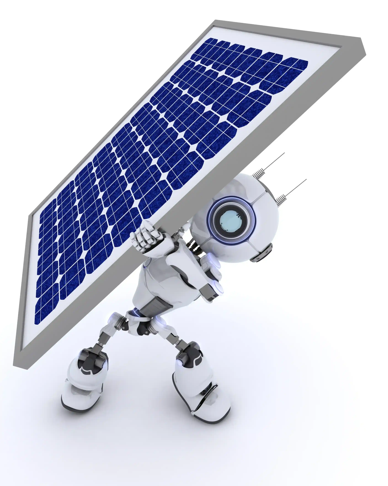

We engineer world-class single-axis tracking hardware and telemetry systems, locally designed to withstand harsh industrial and utility scale environments.
Inquire NowAt TrackLab, we produce world-class solar technology, proudly created in Africa. We have over 30 years' experience in solar technology design and development in embedded control systems in Southern Africa.
TrackLab engineers customized solar tracking hardware capable of closed-loop tilt adjustments and automatic wind stowing safeguards.
Precision tracking using hybrid closed-loop tilt feedback and astronomical calculations.
Seamless wireless data logging and coordinators managing arrays in extreme remote industrial zones.
Real-time wind speed indicators and weather center links for instant safeguard wind-stowing.
We combine three central coordinates of high-tech solar architecture to deliver reliable local hardware operation and extreme wind stowing protection.
Embedded row-level controllers deploying hybrid astronomical algorithm routines and closed-loop tilt trackers.
Learn MoreCentral coordinator managing row communications via LoRa wireless telemetry, RS485 loops, CAN-2.0, or Fibre.
Learn MoreCentralized web commissioning interface with continuous data logging, custom reporting, and SCADA links.
Learn MoreDeveloped by Lumax Energy in South Africa, TrackLab represents the pinnacle of Southern African engineering. Our systems are built to endure harsh mining and industrial environmental climates.
Select the modular TrackLab hardware units tailored to scale your solar project seamlessly.
Rugged, single-row edge controller with closed-loop solar tracking algorithms.
Central wireless Row network coordinator with integrated local commissioning web service.
Our Midrand-based South African solar engineering team is dedicated to designing customizable tracking products and local support.
Chief Executive Officer

Hardware Architects
Telemetry & Software
Operations & Support
Find comprehensive answers to design options, power methods, and stowing safeguards.
The Tracker Controller Unit (TCU) primarily calculates solar coordinates using high-precision astronomical path equations. The closed-loop tilt sensor (inclinometer) continuously verifies the structural slope to adjust slewing row torque, maintaining offset accuracy within 0.1° under cloud cover.
Each single-row tracking setup can be powered natively by a dedicated local PV module or connected directly to string systems up to 1500Vdc. It integrates a high-efficiency CC/CV battery charger with lithium-ion cell backups to execute critical weather stows during major grid failure events.
The Network Control Unit (NCU) connects directly with digital wind speed anemometers and integrates with optional South African Weather Services. If wind speeds exceed safe operational limits, the NCU overrides row paths, commanding all connected TCU systems to angle flat and lock rows instantly.
Get in touch with our Pretoria engineering office to discuss custom mechanical integrations, LoRa telemetry setups, and pricing models for utility networks.
Lumax Energy House, Midrand, Gauteng, Pretoria, South Africa
Click the button below to log in to our secure Haak Client Portal and submit a customized telemetry/mechanical engineering request directly to Dr. Werner Haak.
Go to Client Portal